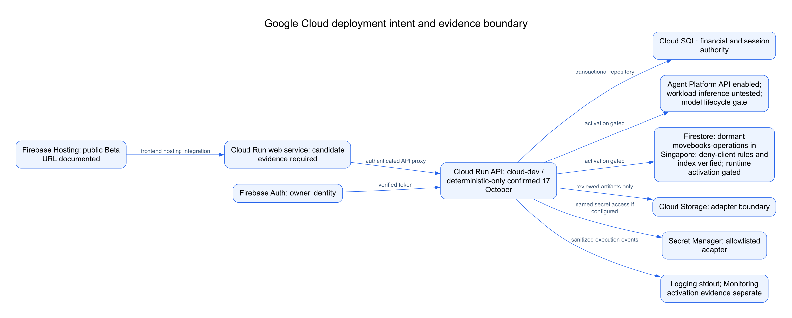

Exercised in this recording: local synthetic workflow, independent deterministic review, fallback advice, human approvals, reconciliation and verified first productive use.
Not demonstrated here: live Gemini inference, a cloud-console session or production customer migration. Deployment claims require separate runtime evidence.